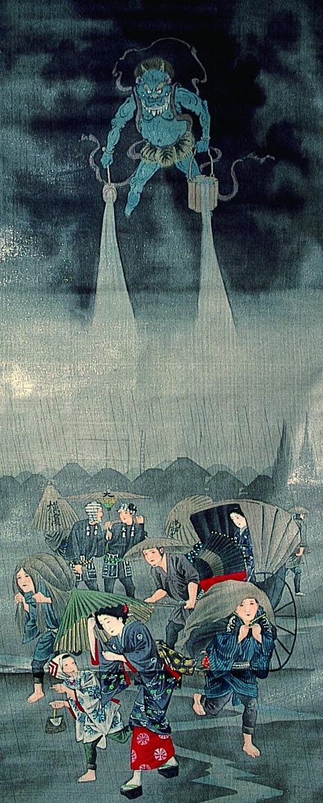

← 图鉴索引

黒雲に浮かび、桶と柄杓から下界に雨を降らせる鬼。体は青く、2本の角がある。
出典：親書誌：A5_pushkin_0064：（雨神図；カメノカミノズ）／日付：2011／資源識別子：A5_pushkin_0064_0001_0000
Copyright (c)2010- International Research Center for Japanese Studies, Kyoto, Japan. All rights reserved.